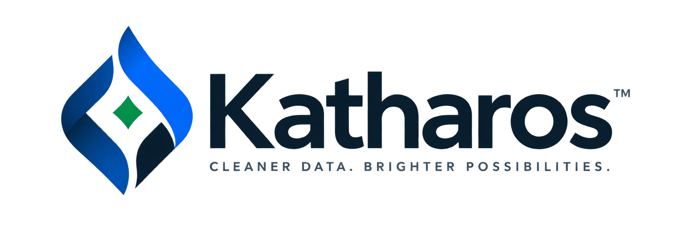

P
Privacidad
La función principal está diseñada para procesar los archivos localmente, sin necesidad de enviarlos a servicios externos.
Katharos ayuda a usuarios y organizaciones a eliminar archivos y carpetas de manera más controlada que mediante el borrado convencional, con un enfoque en privacidad, simplicidad y trazabilidad.

Eliminar un archivo o vaciar la Papelera de reciclaje no siempre implica que su contenido haya desaparecido inmediatamente del dispositivo.
La función principal está diseñada para procesar los archivos localmente, sin necesidad de enviarlos a servicios externos.
Un flujo guiado reduce la dependencia de comandos técnicos y facilita revisar cada paso antes de continuar.
Katharos busca ofrecer información sobre el resultado y generar reportes que documenten el procedimiento.
Elige el archivo o carpeta sobre el que deseas realizar el procedimiento.
Comprueba la selección y lee las advertencias antes de ejecutar una acción irreversible.
Confirma que tienes autorización y ejecuta el método disponible en la versión correspondiente.
Revisa el resultado de la operación y, cuando corresponda, el reporte generado.
La versión inicial está orientada principalmente al borrado de archivos y carpetas en Windows mediante técnicas de sobrescritura.
Katharos debe utilizarse únicamente sobre información propia o sobre la cual el usuario tenga autorización.
Katharos se encuentra actualmente en fase MVP. Esta sección está preparada para publicar las versiones oficiales de Windows y macOS junto con sus mecanismos de verificación.
Versión del MVP de Katharos desarrollada para sistemas Windows.
Estado: Versión en preparación
Descarga disponible próximamenteLa versión de Katharos para macOS está prevista para la siguiente etapa de desarrollo del proyecto.
Estado: Próximamente
Descarga Katharos únicamente desde los canales oficiales del proyecto. Cuando se publique un release, compara el hash SHA-256 del archivo descargado con el valor oficial antes de ejecutarlo.
Respuestas rápidas sobre el funcionamiento, alcance y limitaciones actuales de Katharos.
El borrado convencional puede eliminar la referencia visible de un archivo sin garantizar que sus datos desaparezcan inmediatamente del dispositivo. Katharos busca realizar un procedimiento más controlado mediante técnicas de sobrescritura y proporcionar información sobre la operación realizada.
La función principal del MVP está diseñada para procesar los archivos localmente en el dispositivo, sin necesidad de cargar su contenido a servidores externos para realizar el procedimiento de borrado.
No. Katharos no afirma que los datos sean imposibles de recuperar bajo cualquier circunstancia. Los resultados pueden variar según el tipo de almacenamiento, el sistema de archivos, el hardware y la existencia de otras copias de la información.
Las unidades SSD utilizan mecanismos internos de administración de almacenamiento que pueden limitar la efectividad de los métodos tradicionales basados únicamente en sobrescritura. Por esta razón, Katharos no garantiza una eliminación irreversible en todos los escenarios relacionados con unidades SSD.
No. Katharos actúa sobre los elementos seleccionados en el entorno donde se ejecuta. Las copias existentes en servicios de almacenamiento en la nube, backups, otros dispositivos o sistemas de sincronización deben gestionarse de manera independiente.
Katharos puede generar información y reportes relacionados con la operación realizada, permitiendo al usuario consultar posteriormente el resultado del procedimiento.
Katharos debe utilizarse únicamente sobre archivos, dispositivos o información propios o sobre los cuales el usuario cuente con autorización. No debe utilizarse para eliminar información de terceros sin autorización, destruir evidencia, ocultar actividades ilegales o realizar acciones no autorizadas.
No. Katharos no debe presentarse como certificado por NIST, ISO u otra entidad mientras no exista una certificación formal y verificable que respalde dicha afirmación.
No. El uso de Katharos no implica por sí mismo el cumplimiento automático de leyes, normas o estándares específicos. Cada usuario u organización debe evaluar sus propias obligaciones legales y regulatorias.
El MVP actual está orientado a Windows. El proyecto contempla preparar una versión para macOS en una etapa posterior del desarrollo.
Algunas operaciones realizadas con Katharos pueden ser irreversibles. Por esta razón, el usuario debe revisar cuidadosamente los archivos o carpetas seleccionados antes de confirmar el procedimiento.
Consulta estos documentos antes de utilizar Katharos.